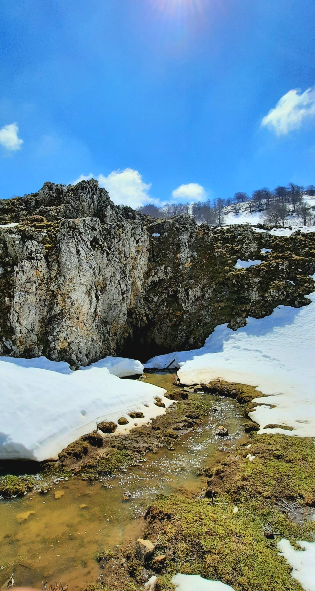

Inghiottitoio della Battaglietta

ITALIANO - Ipogeo carsico che si spinge sino a circa 30 metri di profondità e terminante con un sifone spesso intasato dal fango. Caratterizzato da un abbondante scorrimento idrico, rappresenta il punto di convogliamento più depresso della relativa valle carsica, quest’ultima delimitata tettonicamente da alti strutturali costituiti dai calcari del Dominio Panormide.
INGLESE - I am Gaetano Ferrarelli